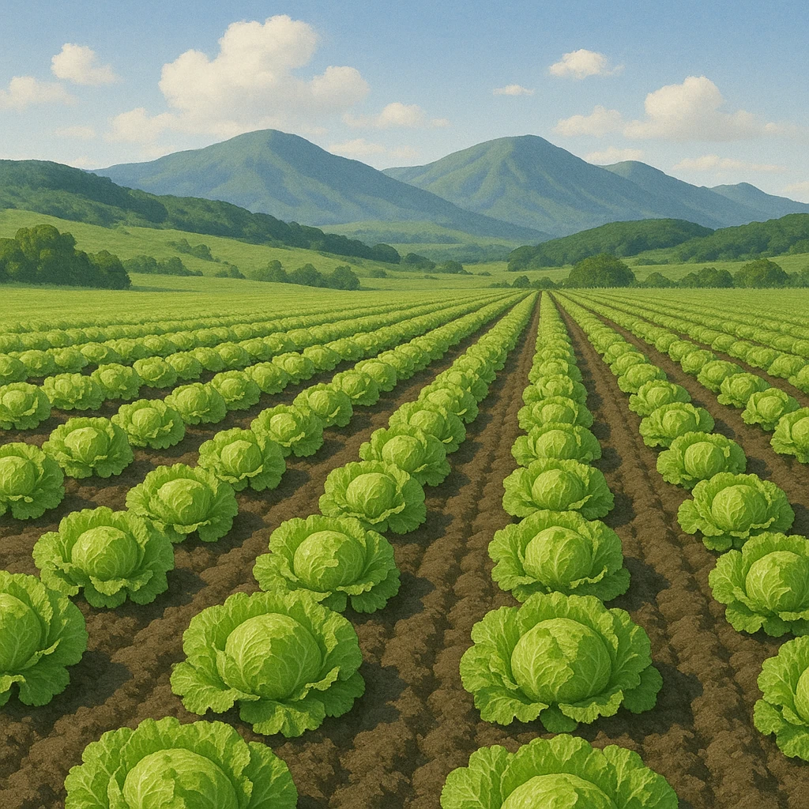

Ⅱ-3
語句
高冷地農業
── すずしい気候をいかす
高冷地農業
…
冷涼
な気候を利用して、
レタス
などの
高原野菜
を栽培している。
どこで？
八ヶ岳
や浅間山のふもと（長野県の高原）。標高が高くて夏でもすずしい。
なぜもうかる？
他の産地が暑くて作れない
夏
に出荷できる。品不足の時期だから
高く売れる
。
何を作る？
はくさい
（全国1位）・キャベツ・セロリなど。夏でもいたみにくい葉物が中心。
言いかえ
出荷の時期をわざとおくらせるので
抑制栽培
ともいう。宮崎・高知の
促成栽培
とは反対。

第16章 中部地方
SEED EDUCATION